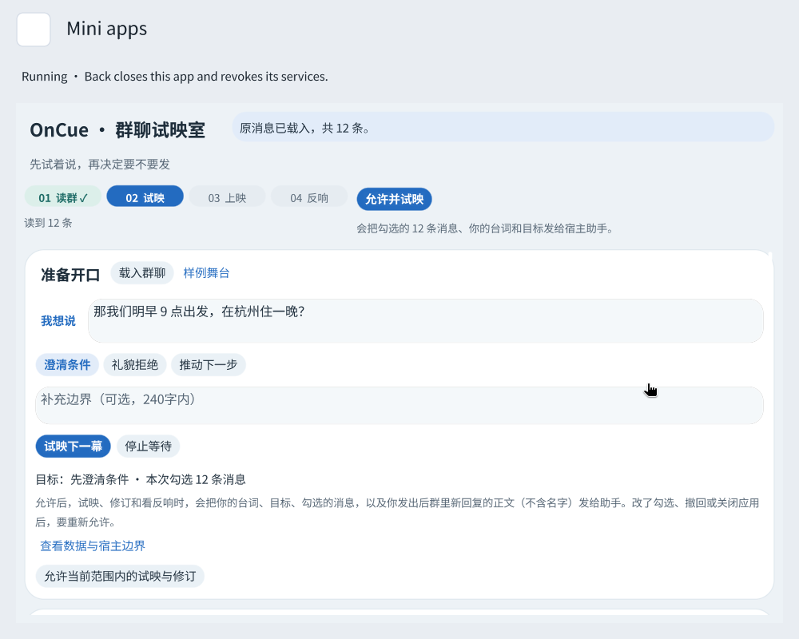
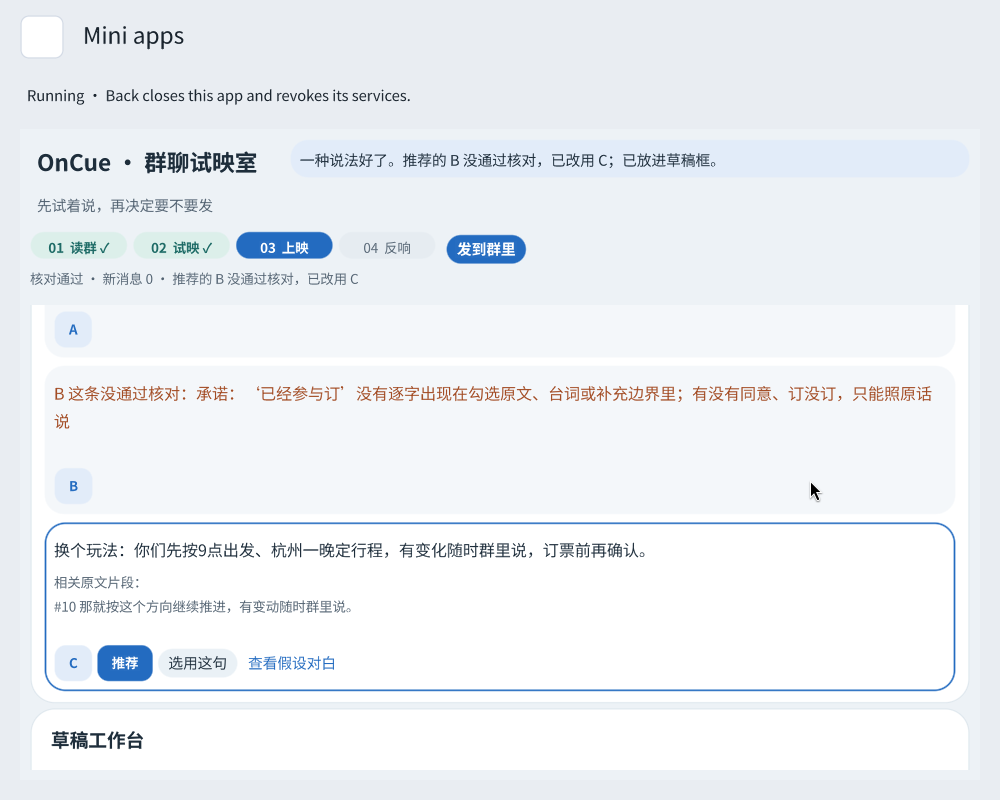
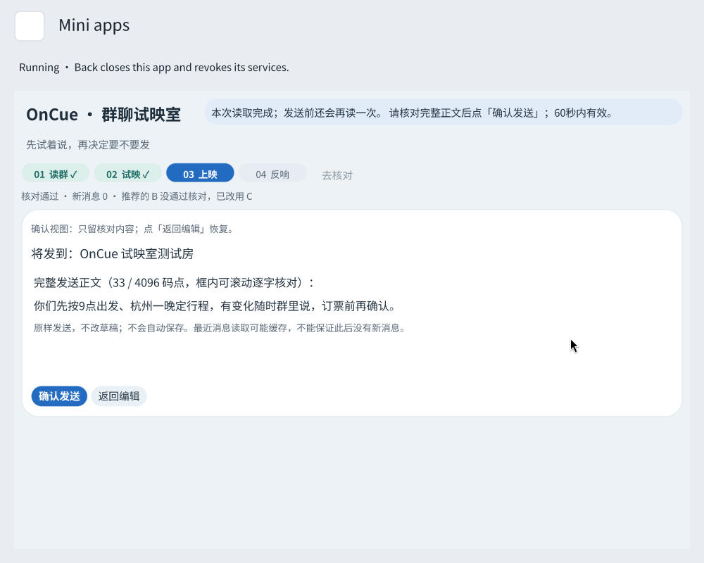
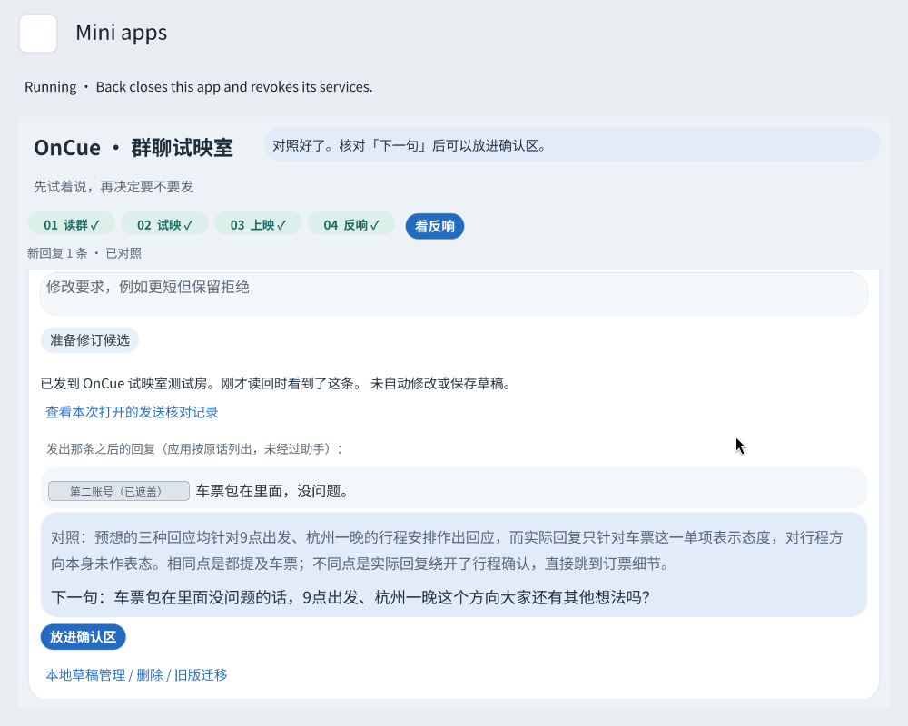

助手给选择。
理解你想澄清、拒绝或推进的目标，提出三种措辞，按你的要求修订。助手的预想对白与群友原话分别呈现。
A LITTLE ROOM BEFORE YOU SPEAK
想澄清、想拒绝，或想把事情往前推一点。
在 Rinx 里，先私下试映三种说法，
再决定哪一句，值得发出去。

助手写措辞
程序做核对
你来做决定
01 / FOUR ACTS, ONE CONVERSATION
从群里的原话出发，
再回到真实的对话里。
打开就读所选群聊的最近消息。保留原编号，由你勾选这次参考哪些话，再写下想说的内容和表达目标。
助手参考原话提出三种表达，每种附上依据。程序逐条核对引用、数字和承诺句式；哪一条没通过，就拦哪一条并说明原因。

先展开确认区，核对发到哪个群、完整正文，再确认发送。发送前复核新消息，发送后读回核实；结果不明时只重新读取。

点「看反响」，把群友之后的回复按原话列出来。助手对照试映时的预想，给出下一句建议，通过核对后再交给你。

02 / THE REAL THING
当前浏览器未能播放视频，请使用下方的 B 站观看或下载入口。
03 / A CLEAR DIVISION OF LABOR
措辞可以有多种，
权限和依据必须明确。
理解你想澄清、拒绝或推进的目标，提出三种措辞，按你的要求修订。助手的预想对白与群友原话分别呈现。
检查结构、引用、数字与承诺句式，处理请求期限和迟到回复。草稿按群保存在本机，支持 A / B 两版对照。
选择参考消息，判断建议是否符合本意，修改草稿，核对房间与全文。应用只在你明确确认后发送。
OnCue 本身不直接联网、不持有密钥。群聊和助手服务由 Rinx 授权，关闭应用或授权到期后由宿主收回。
数据说明 ↗04 / BUILT, RUN, VERIFIED
OnCue 0.5.4 · 应用验证记录
75 个场景，三种窗口尺寸。
在 card-host 里注入宿主回复与失败。
生产函数在真实虚拟机里执行。
涵盖解析、存储、核对与发送恢复。
读群、试映、发送读回、看反响，
以及确认前的新消息复核。
为 OnCue 编写的 splash-app-verify，通过场景和失败注入验证 Splash 应用；已作为 PR 提交给 OctoSense App Flow。
安装官方 Rinx 1.3.0，登录 Matrix。真实试映需要在 Rinx 配置助手。
获取源码，在 Discover → Mini apps → Import an app 中选择 bundle/，填写要使用的房间。
Review bundle，核对八项服务和目标房间，再 Run。写下你的台词，点「允许并试映」。